9.Feature Branch Workflow¶
In the previous chapter, you learned how to work directly on the main branch using the Centralized Workflow, which is convenient in certain situations.
Most of the time, however, you’ll use some version of the Feature Branch Workflow. Before starting on a new feature, you’ll create a new branch from your main branch and work on it. Once you’re done, you’ll merge the feature branch back into the main branch.
Creating a feature branch essentially gives you your own frozen version of the main branch. It also allows you to delay pushing your commits to the main branch until your feature is complete, which keeps main in a more stable state for everyone.
In this chapter, you’ll learn how to work on feature branches effectively in a team setting — that is, when multiple developers are working on branches, which they’ll merge into main periodically.
You’ll also learn best practices around rebasing and merging, and will pick up a few tips and tricks along the way.
When to use the Feature Branch workflow¶
There are a few limited scenarios where the Centralized Workflow is a good fit. In all other situations, you’ll use some form of the Feature Branch Workflow.
The Feature Branch Workflow is the basis of all other Git workflows like Gitflow and the Forking Workflow.
Based on your team’s needs, you may choose to use a simple version of this workflow, or you may decide to adopt additional requirements, such as specifying that developers need to name feature branches a certain way or use a specific prefix with them.
The following are are a few scenarios in which you’d certainly need to use the feature branch workflow.
When developing features in parallel¶
When working in a team, it’s often not feasible to wait until one developer has completed their work before another developer starts. Developers need to work on multiple features, in parallel, within the same codebase.
For example, one team might modify a page’s design while another team adds additional content to it.
It’s also not feasible for you to work on code that keeps changing while you’re also changing it yourself. The code you’re working on needs to remain stable until you’re ready to pull in other updates to it.
Even when working on your own, you might be in the middle of working on one feature when you have to switch to working on a different one. You’d need a way to store that in-progress code somewhere until you can come back to it.
Creating a feature branch allows a developer or a team to work on a certain snapshot of the code until they’re ready to integrate it back into main.
When your code needs a review¶
Regardless of team size or how many features you work on at once, you must use feature branches if you need other developers to review your code.
If your code needs a review before you merge it into main, then by definition, you can’t use the main branch to push your code for review!
When sharing code still in development¶
Feature branches allow you to share code before you merge it into main. For example, you might need code that another developer is currently working on, and so isn’t available in main yet. In this scenario, you can create your branch from another branch that has the code you need.
Once you merge the other branch into main, you can rebase onto main, which will remove the other branch’s commits from your branch. This allows you to start working with code that’s still in development.
When collaborating on a feature¶
Branches allow you to collaborate with other developers while working on new features. Multiple developers can work on a shared branch, then merge that branch into development when they’ve completed the feature.
This allows main to remain stable while the feature is under development. Once the feature’s development and testing phases are complete, it can be merged into main all at once.
Getting started¶
As in the previous chapter, you’ll simulate working on a team by playing the role of different developers. However, you’ll switch roles a bit more in this chapter.
A few things have happened since the last chapter. A new developer, Chad, has joined the team, and the team has switched to using the Feature Branch Workflow.
Start by unzipping repos.zip from the starter folder for this chapter. Compared to the previous chapter, you’ll now see an additional checked-out project for Chad within the starter/repos folder:
starter
└── repos
├── alex
│ └── checklists
├── beth
│ └── checklists
├── chad
│ └── checklists
└── checklists.git
As in the previous chapter, open four tabs in your Terminal app and open the following directories within each tab:
cd path/to/projects/starter/repos/alex/checklists # 1st Tab
cd path/to/projects/starter/repos/beth/checklists # 2nd Tab
cd path/to/projects/starter/repos/chad/checklists # 3rd Tab
cd path/to/projects/starter/repos/checklists.git # 4th Tab
Each developer’s checklists repository has local commits that they haven’t pushed to the remote server. The following section will give you an overview of the branches you’ll work with and the state of the commits in them.
Initial project state¶
The team has been hard at work on two feature branches. Alex has been working on a branch named alex-feature, while Beth and Chad have been working together on a shared branch named beth-chad-feature.
The following image gives you a combined view of the initial state of each developer’s local repository and its relation to the origin remote. The solid-outlined commits have been pushed to the remote, while the dashed-outlined commits are still in each developer’s local repository. The initial ellipsis (•••) node represents all commits on main before C1.
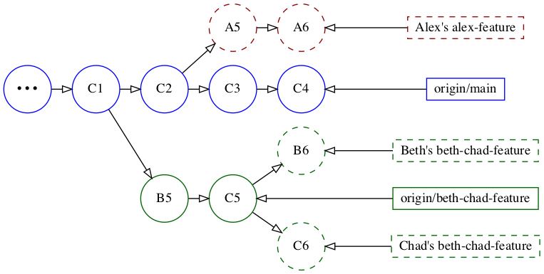
Alex created his alex-feature branch when main was at C2 and has added two local commits, A5 and A6, on it. He hasn’t pushed this branch to the remote yet, so the branch only exists in his local repository.
Beth and Chad created the shared beth-chad-feature branch when main was at C1. They’ve pushed its first two commits, B5 and C5, to the remote. Both Beth and Chad have one additional commit, B6 and C6 respectively, on their local version of the shared branch.
Just to confirm which commits have been pushed to the remote, switch to the checklists.gittab in Terminal and run the following:
git log --oneline --graph --all
You’ll see the following confirming that main is at C4, as in the image above, and that beth-chad-feature is at C5 on the remote:
* b2deca5 (beth-chad-feature) C5: Added <footer> to <body>
* 4fbfda4 B5: Moved <h1> and <p> within <header>
| * 51bdc3c (HEAD -> main) C4: Updated section styling to use a class
| * 6a52517 C3: Added "Introduction" section
| * fcb3dbc C2: Added background-color css for section
|/
* 6bc53bb C1: Added "Morning Routine Checklist" section
...
You won’t need the fourth checklists.git tab for anything else in this chapter, so you can close it now to simplify things.
Since this chapter is a bit more involved, the following section will give you an overview of the tasks you’ll perform in this chapter.
Project roadmap¶
As mentioned previously, you’ll be switching roles a bit more in this chapter — not just because Chad joined the team, but also because there’s a lot more to do. :]
The following is a quick roadmap of what you’ll do in this chapter. You don’t have to remember all of this. Its purpose is to give you an idea of the different tasks you’ll perform so that you’re mentally prepared for what’s next.
You’ll start by updating the alex-feature and beth-chad-feature branches with the new code on main. Since one branch is shared and the other isn’t, you’ll update each branch differently.
You’ll also need to make sure your feature branches still work correctly after you update them with code from main. And, of course, there will be unintended side effects that you’ll need to fix!
You’ll fix an issue on alex-feature, and then will push the branch up for review. Then you’ll review the branch as Beth and will merge it into main.
Then since main has been updated again, Chad will update the shared branch with the new code in main before pushing the shared branch up for review. And of course, this chapter wouldn’t be complete without having to resolve a merge conflict!
Before you dive in, there’s one final thing to learn: Why should you update feature branches with the latest code in main before you merge them if you’re just going to merge them into main anyway? You’ll cover that in the next section.
Importance of updating branches with main¶
There are two main reasons to update your branches with new code from main.
The first and most important is for a correct code review. Once you’re done working on your branch and are ready to push it up for review, you’ll want to ensure that your code will integrate properly with the newest code on the main branch.
There might be conflicts that you need to resolve or other changes that you need to make based on the latest changes on the main branch. Reviewing code based on an outdated version of main could lead to bugs once you merge the reviewed code into main.
The second reason is so your own code doesn’t diverge too far from the main branch. If there are new updates in main that affect your branch, the sooner you integrate them, the fewer changes you’ll have to make later.
How to update branches with main¶
There are two ways of updating your branches with main: You can either rebase your branch onto main or you can merge the main branch into your local branch.
If you’re working on a local branch that you haven’t pushed to the remote yet, rebasing is preferred. Rebasing your branch avoids merge commits and makes the history easier to review.
On the other hand, if you’re working on a shared branch that’s already been pushed to the remote, such as the beth-chad-feature branch, you should merge main into your branch instead. You should never rebase public branches that other developers are using.
One exception is if you’re the only one working on a branch you’ve pushed to the remote. Sometimes developers will periodically push long-running branches to the remote as a backup.
If no one else is using your branch, you can rebase it. Since rebasing rewrites the branch history, you’ll have to force-push it after you rebase.
Updating the two project branches¶
Since alex-feature hasn’t been pushed to origin yet, you’ll rebase it onto main. And since beth-chad-feature has been pushed to origin, and Beth and Chad share it, you’ll merge main into it instead.
Each developer has already pulled main, so their local main branches are up to date with the remote ones.
Switch to the alex/checklists tab in Terminal and run the following to verify the current state of Alex’s local repository:
git log --oneline --graph --all
You’ll see the following:
* b2deca5 (origin/beth-chad-feature) C5: Added <footer> to <body>
* 4fbfda4 B5: Moved <h1> and <p> within <header>
| * 9f06a73 (HEAD -> alex-feature) A6: Added "Evening Routine Checklist" section
| * 427b5ee A5: Added h2 color to style.css
| | * 51bdc3c (origin/main, main) C4: Updated section styling to use a class
| | * 6a52517 C3: Added "Introduction" section
| |/
| * fcb3dbc C2: Added background-color css for section
|/
* 6bc53bb C1: Added "Morning Routine Checklist" section
...
You aren’t really interested in the origin/beth-chad-feature reference, which is complicating the log — you just want to see the alex-feature branch in relation to main. Instead of using --all, you can specify a list of branches to include.
Run the previous command with alex-feature and main instead of –all:
git log --oneline --graph alex-feature main
You’ll see the following, which should look much better:
* 9f06a73 (HEAD -> alex-feature) A6: Added "Evening Routine Checklist" section
* 427b5ee A5: Added h2 color to style.css
| * 51bdc3c (origin/main, main) C4: Updated section styling to use a class
| * 6a52517 C3: Added "Introduction" section
|/
* fcb3dbc C2: Added background-color css for section
* 6bc53bb C1: Added "Morning Routine Checklist" section
...
Visually, this is equivalent to the following:
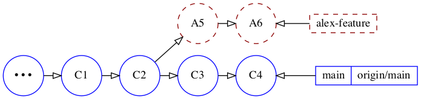
Since alex-feature is the current branch, run the following to rebase it onto main:
git rebase main
The rebase should succeed without conflicts. The branch is now directly ahead of main:
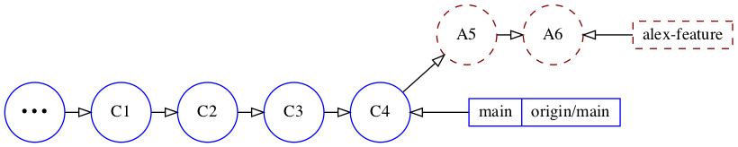
You also can run the previous log command again to verify the rebase:
git log --oneline --graph alex-feature main
You’ll see that that the history is now linear:
* 5a22c9d (HEAD -> alex-feature) A6: Added "Evening Routine Checklist" section
* b803ccc A5: Added h2 color to style.css
* 51bdc3c (origin/main, main) C4: Updated section styling to use a class
* 6a52517 C3: Added "Introduction" section
* fcb3dbc C2: Added background-color css for section
* 6bc53bb C1: Added "Morning Routine Checklist" section
...
Congratulations, you’ve successfully updated the alex-feature branch with changes in main. Next, you’ll update the beth-chad-feature branch by merging main into it.
Switch to the beth/checklists tab in Terminal and run:
git log --oneline --graph --all
You’ll see:
* 19f8c99 (HEAD -> beth-chad-feature) B6: Added <hr/> in <header>
* b2deca5 (origin/beth-chad-feature) C5: Added <footer> to <body>
* 4fbfda4 B5: Moved <h1> and <p> within <header>
| * 51bdc3c (origin/main, main) C4: Updated section styling to use a class
| * 6a52517 C3: Added "Introduction" section
| * fcb3dbc C2: Added background-color css for section
|/
* 6bc53bb C1: Added "Morning Routine Checklist" section
...
Visually, this is equivalent to the following:
Now, merge main into the beth-chad-feature branch, which is already checked out:
git merge main
Type :wq to accept the default commit message in Vim.
To verify the merge, run the previous log command again:
git log --oneline --graph --all
You’ll see the following, which confirms the merge:
* 7ddf0a8 (HEAD -> beth-chad-feature) Merge branch 'main' into beth-chad-f...
|\
| * 51bdc3c (origin/main, main) C4: Updated section styling to use a class
| * 6a52517 C3: Added "Introduction" section
| * fcb3dbc C2: Added background-color css for section
* | 19f8c99 B6: Added <hr/> in <header>
* | b2deca5 (origin/beth-chad-feature) C5: Added <footer> to <body>
* | 4fbfda4 B5: Moved <h1> and <p> within <header>
|/
* 6bc53bb C1: Added "Morning Routine Checklist" section
...
Visually this is equivalent to the following in which the merge commit represented with MC:
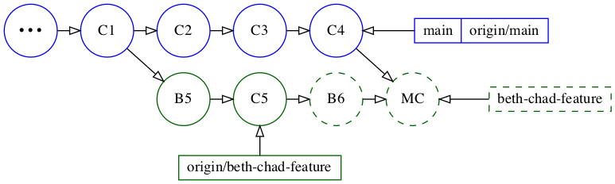
Next, Beth will push her local B6 commit, and the merge commit to the remote branch. Run the following to push the branch to origin:
git push
Now, the origin version of beth-chad-feature has both B6 and the merge commit:
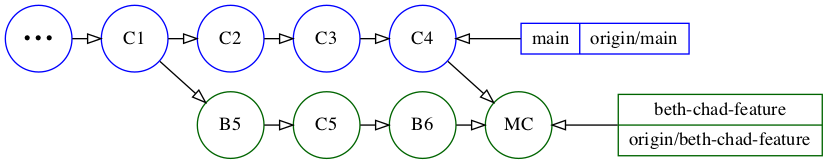
Next, you’ll have Chad pull the newest changes on beth-chad-feature to get the updates that Beth pushed to the branch.
Switch to the chad/checklists tab in your Terminal app.
Before you fetch, run the same log command to view the state of the repository:
git log --oneline --graph --all
You’ll see something similar to what Beth initially had:
* 347bcd3 (HEAD -> beth-chad-feature) C6: Removed "Routine" from heading
* b2deca5 (origin/beth-chad-feature) C5: Added <footer> to <body>
* 4fbfda4 B5: Moved <h1> and <p> within <header>
| * 51bdc3c (origin/main, main) C4: Updated section styling to use a class
| * 6a52517 C3: Added "Introduction" section
| * fcb3dbc C2: Added background-color css for section
|/
* 6bc53bb C1: Added "Morning Routine Checklist" section
...
Which is equivalent to the following:
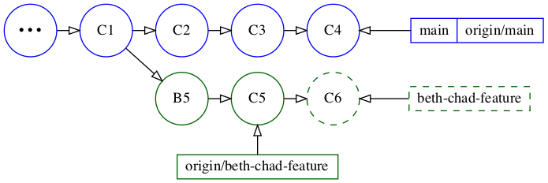
Chad’s local beth-chad-feature branch is still directly ahead of the remote tracking origin/beth-chad-feature branch since Chad hasn’t fetched or pulled yet.
Run the following to fetch the latest updates from the remote
git fetch
And then run the same log command:
git log --oneline --graph --all
You’ll see the following:
* 7ddf0a8 (origin/beth-chad-feature) Merge branch 'main' into beth-chad-fe...
|\
| * 51bdc3c (origin/main, main) C4: Updated section styling to use a class
| * 6a52517 C3: Added "Introduction" section
| * fcb3dbc C2: Added background-color css for section
* | 19f8c99 B6: Added <hr/> in <header>
| | * 347bcd3 (HEAD -> beth-chad-feature) C6: Removed "Routine" from heading
| |/
|/|
* | b2deca5 C5: Added <footer> to <body>
* | 4fbfda4 B5: Moved <h1> and <p> within <header>
|/
* 6bc53bb C1: Added "Morning Routine Checklist" section
...
The following image might make it a bit easier to comprehend:
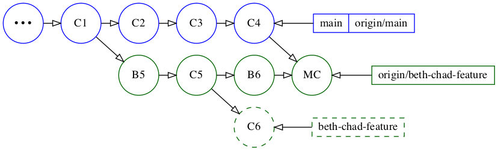
Chad’s beth-chad-feature branch has diverged from origin/beth-chad-feature. If you recall from the previous chapter, this is the same situation that occurred when your main had local commits, but another developer had updated origin/main.
In this situation, where the remote branch has diverged, running a normal git pull will result in a merge commit, so you’ll need to add the --rebase option.
Run the following:
git pull --rebase
Note
Chad has actually configured pulls to automatically rebase by running git config pull.rebase true, as mentioned in the previous chapter. So in this case, you could have left the --rebase option off.
Whoa, there’s a merge conflict!
Auto-merging index.html
CONFLICT (content): Merge conflict in index.html
error: could not apply 347bcd3... C6: Removed "Routine" from heading
Resolve all conflicts manually, mark them as resolved with
"git add/rm <conflicted_files>", then run "git rebase --continue".
You can instead skip this commit: run "git rebase --skip".
To abort and get back to the state before "git rebase", run "git rebase --abort".
Could not apply 347bcd3... C6: Removed "Routine" from heading
The changes Beth merged from main are causing this merge conflict.
In the message, you’ll see that it says: could not apply 347bcd3... C6: Removed "Routine" from heading
Run git show 347bcd3 to take a look at the contents of that commit. You’ll see the following changes:
C6: Removed "Routine" from heading
...
<section>
- <h2>Morning Routine Checklist</h2>
+ <h2>Morning Checklist</h2>
</section>
...
It seems like a simple change. Chad removed the word Routine from Morning Routine Checklist to make it Morning Checklist.
Open index.html in a text editor to resolve the conflict. You’ll see the conflict markers in the following area:
16 <main>
17 <<<<<<< HEAD
18 <section class="intro-section">
19 <h2>Introduction</h2>
20 </section>
21
22 <section class="checklist-section">
23 <h2>Morning Routine Checklist</h2>
24 =======
25 <section>
26 <h2>Morning Checklist</h2>
27 >>>>>>> 347bcd3 (C6: Removed "Routine" from heading)
28 </section>
29 </main>
The conflict is because two different commits changed adjacent lines. In the merge commit from main, class=“checklist-section” has been added to the <section> tag, to make it <section class="checklist-section">.
In Chad’s change in C6, Chad updated the <h2>Morning Routine Checklist</h2> line below <section> to <h2>Morning Checklist</h2>.
Remove the old <section> tag line below ======= (on line 25) and the old <h2> line above it (line 23) and then remove all three conflict marker lines.
It should now look like this:
16 <main>
17 <section class="intro-section">
18 <h2>Introduction</h2>
19 </section>
20
21 <section class="checklist-section">
22 <h2>Morning Checklist</h2>
23 </section>
24 </main>
To complete the rebase, run the following:
git add index.html
git rebase --continue
Finally, type :wq in the Vim window that opens to commit the change with the existing message.
To verify that you resolved the conflict correctly, you can run git show HEAD or just git show, which will show you the contents of the latest commit on the current branch.
git show
You’ll now see the following changes in the diff:
C6: Removed "Routine" from heading
...
<section class="checklist-section">
- <h2>Morning Routine Checklist</h2>
+ <h2>Morning Checklist</h2>
</section>
...
Now, run git push to push your rebased and conflict-free commit to the shared beth-chad-feature branch.
git push
Chad’s repository is now in the following state:
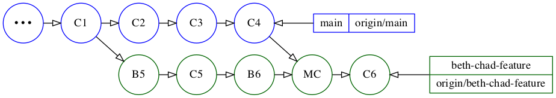
Congratulations! You successfully incorporated the latest changes from the main branch into alex-feature and beth-chad-feature. You’ve also pushed Beth and Chad’s local commits to the shared beth-chad-feature branch.
Merging the feature branches into main¶
Alex is ready to push his branch up for review. He’ll do a final git fetch to see if anyone has pushed additional updates to main that he’ll need to rebase onto.
Switch back to the alex/checklists tab in Terminal and run git fetch:
git fetch
You’ll see that your remote origin/beth-chad-feature branch pointer has been updated, but there aren’t any additional updates to main.
...
From ../../checklists
b2deca5..45874cd beth-chad-feature -> origin/beth-chad-feature
You could also run the previous branch-specific log command to verify this:
git log --oneline --graph alex-feature main
You can see that the main branch is up to date with origin/main:
* 5a22c9d (HEAD -> alex-feature) A6: Added "Evening Routine Checklist" section
* b803ccc A5: Added h2 color to style.css
* 51bdc3c (origin/main, main) C4: Updated section styling to use a class
* 6a52517 C3: Added "Introduction" section
* fcb3dbc C2: Added background-color css for section
* 6bc53bb C1: Added "Morning Routine Checklist" section
If you recall, there weren’t any merge conflicts when rebasing Alex’s branch.
However, the absence of a merge conflict doesn’t guarantee that any updates Alex made will integrate correctly with any new code that has been added to main.
Run the following to open index.html in your default browser for a visual check:
open index.html
You’ll see the following:
Note that the Evening Routine Checklist section heading doesn’t have the light cyan background that the Morning Routine Checklist section heading has. That’s because commit C4 changed how the CSS background-color is applied.
To show the content of C4, you could run git show 51bdc3c. However, since main is at C4, you can also use git show main to see the content of the latest commit on main.
Run the following to see the changes made in C4:
git show main
Here’s an abbreviated version of the changes you’ll see for index.html:
C4: Updated section styling to use a class
...
diff --git a/index.html b/index.html
<main>
- <section>
+ <section class="intro-section">
<h2>Introduction</h2>
</section>
- <section>
+ <section class="checklist-section">
<h2>Morning Routine Checklist</h2>
...
And you’ll see the following for style.css:
diff --git a/style.css b/style.css
...
-section {
+.checklist-section {
background-color: lightcyan;
}
+
+.intro-section {
+ background-color: lavender;
+}
Prior to C4, the background-color: lightcyan style applied to a <section> tag. But C3 added an Introduction section, which required a different background color. In C4, the background-color: lightcyan style was updated to apply to any tags using the checklist-section class instead of to all <section> tags.
Even though the changes on Alex’s branch were correct on their own, they were based on the earlier version of main at C2. That makes the changes incorrect after Alex integrated them with the updated style.css file in main at C4.
To fix this, Alex needs to add the checklist-section class to his newly-added Evening Routine Checklist section.
Open index.html in a text editor and add class=“checklist-section” within the existing section tag on line 22 to make it <section class="checklist-section">.
Once you’re done, run git diff, which should show the following change:
- <section>
+ <section class="checklist-section">
<h2>Evening Routine Checklist</h2>
Since Alex just added the Evening Routine Checklist section in A6, which is the latest commit, he can amend it to make this update part of the same commit.
Run the following to amend the current changes into the latest commit:
git add index.html
git commit --amend --no-edit
The --no-edit option allows you to accept the existing commit message. This lets you avoid the extra step of going to the Vim editor and typing :wq.
Just to make sure, run git show to see the contents of the latest commit.
git show
You should see the following change:
</section>
+
+ <section class="checklist-section">
+ <h2>Evening Routine Checklist</h2>
+ </section>
</main>
Now, open index.html again or refresh the existing page:
open index.html
This looks correct!
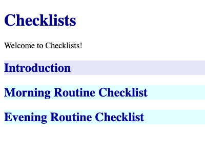
Alex is now ready to push his branch to origin for a review.
Run the following command:
git push -u origin head
In the push command, -u is shorthand for --set-upstream, which creates a remote tracking branch for your current branch. And using head is shorthand for using the same branch name. The more verbose command would have been:
git push --set-upstream origin alex-feature # same as above
You should see the following confirmation:
...
To ../../checklists.git
* [new branch] head -> alex-feature
Branch 'alex-feature' set up to track remote branch 'alex-feature'
from 'origin'.
At this point, Alex pings the team and lets them know that the alex-feature branch has been pushed to origin and is ready to be reviewed and merged.
You’ll review the branch as Beth. Switch to your beth/checklists tab in Terminal and run git fetch:
git fetch
...
From ../../checklists
7ddf0a8..45874cd beth-chad-feature -> origin/beth-chad-feature
* [new branch] alex-feature -> origin/alex-feature
You can see that beth-chad-feature has been updated from when Chad pushed it, and there’s a new alex-feature branch.
While not strictly necessary at the moment, but since you are already on the beth-chad-feature branch, run git pull to pull in the latest changes to it:
git pull
Next, check out Alex’s branch:
git checkout alex-feature
To review the changes, you’ll use the -p or --patch option with git log. You’ll also use a revision range specifier to only show the commits since main. The format for the range specifier is <after>..<until>. So you’ll use main..HEAD or just main.. for short.
Run the following command to see the changes on the current alex-feature branch, since main:
git log -p main..
The two commits look good, so now merge alex-feature into main and push it:
git checkout main
git merge alex-feature
git push
Also, delete the local branch and the remote branch with the following commands:
git branch -d alex-feature
git push origin --delete alex-feature
Congratulations! You’ve successfully merged the alex-feature branch into main.
Next, you’ll push up the beth-chad-feature branch for review as Chad since he made the last commit on the branch.
Switch to the chad/checklists tab in Terminal and open index.html to make sure it looks correct:
open index.html
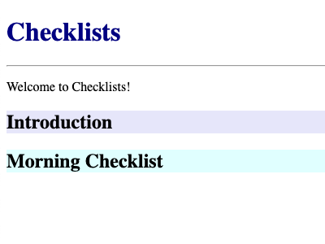
Chad’s latest change in C6 was to remove the word Routine from Morning Routine Checklist, so that looks correct.
That’s the commit with the conflict you resolved earlier in the chapter. Now, run git show to take another look at the latest commit on the branch:
<section class="checklist-section">
- <h2>Morning Routine Checklist</h2>
+ <h2>Morning Checklist</h2>
</section>
Since Chad is ready to push his branch for review, he’ll do a final fetch to see if there have been any recent updates on main that he needs to integrate. Run git fetch.
git fetch
And indeed, the main branch has an update!
...
From ../../checklists
51bdc3c..b021b4e main -> origin/main
This is because main now contains the commits from Alex’s alex-feature branch that Beth merged and pushed.
So now Chad needs to merge the updated main into beth-chad-feature, make sure there are no issues, and then push the branch up for review.
Here’s how Chad’s repository currently looks:
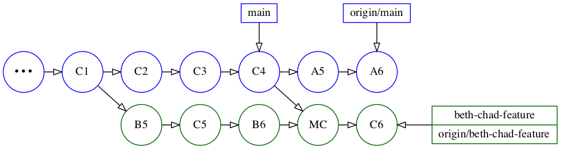
If you run git merge main now, it will say Already up to date because you haven’t yet pulled the changes from your updated origin/main into your main branch.
Run the following commands to update main:
git checkout main
git pull
git checkout -
The dash in git checkout - takes you back to the previous branch you were on, similar to how cd - takes back you to the previous directory you were in.
It will also show you a confirmation that says:
Switched to branch 'beth-chad-feature'
Now, you’re finally ready to merge the updated main into your branch:
git merge main --no-edit
Again, --no-edit lets you use the default commit message and bypass Vim.
The merge was successful, but does that mean there aren’t any issues with the merged-in code? It’s best to check.
Once again, open index.html by running:
open index.html
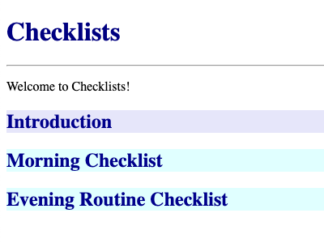
If you recall, in C6, Chad removed the word Routine from Morning Routine Checklist, which was based on an update from the design team. In the meantime, however, Alex added a section named Evening Routine Checklist based on the previous design.
Chad’s changes aren’t necessarily incorrect, but since he removed the word Routine from Morning Routine Checklist, he should probably remove it from Evening Routine Checklistas well.
Open index.html in a text editor and remove the word Routine from Evening Routine Checklist.
Run git diff to confirm you have the following changes:
<section class="checklist-section">
- <h2>Evening Routine Checklist</h2>
+ <h2>Evening Checklist</h2>
</section>
It would be nice if Chad could amend the C6 commit where the other part of this change was made, but that’s already been pushed to a shared branch, so amending it would rewrite its history.
Additionally, the C6 commit is before the merge. It isn’t possible to amend it since the changes you need to amend aren’t available at that point.
So you’ll just add an additional commit to the branch after the merge. Run the following to commit the change:
git commit -am "C7: Removed Routine from heading"
Open index.html one final time to confirm:
open index.html
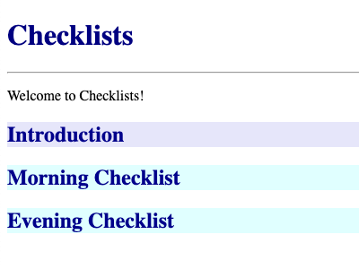
It looks good! You’re clear to push the latest changes up to the branch for review.
Run git push:
git push
Chad now lets Alex know that the beth-chad-feature branch is ready for him to review and merge.
Switch to the alex/checklists tab in your Terminal and run git fetch:
git fetch
Alex hadn’t fetched since Beth merged his branch, so he sees an update to his origin/mainas well:
...
45874cd..10c94b0 beth-chad-feature -> origin/beth-chad-feature
51bdc3c..b021b4e main -> origin/main
Run the following to update main, then check out beth-chad-feature:
git checkout main
git pull
git checkout beth-chad-feature
Alex has reviewed the commits on the branch and is ready to merge the branch into main.
He has two options for doing this. In the first, he could merge it as-is, retaining the various merge commits. For example, he could run git merge beth-chad-feature and then git push, which would result in the following:
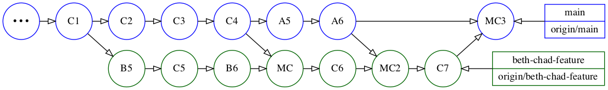
Alternatively, he could first rebase the beth-chad-feature branch against main to remove the merge commits. This would result in the following graph in which beth-chad-feature has been rebased onto main and no longer contain the two merge commits that are on origin/beth-chad-feature:
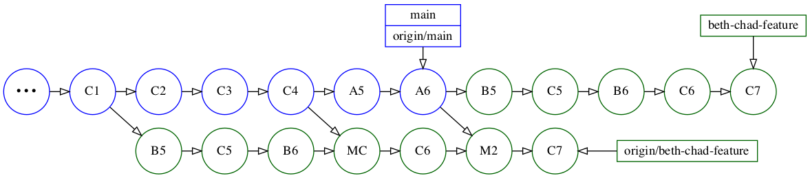
And then merge the freshly-rebased version of the beth-chad-feature branch into main, which would result in a fast forward merge.
Pushing that would result in the following:
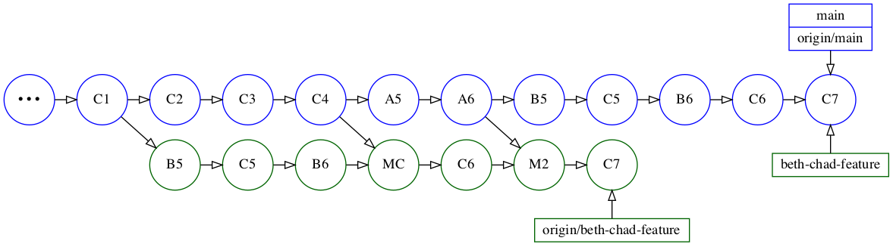
The reason no one rebased this branch before is that different developers were actively using it. Rebasing a branch while others are using it is never a good idea since it would need to be force-pushed.
However, this is essentially the end-of-life point for this branch. After he merges it, Alex will delete it. Its purpose as a shared branch is essentially defunct, so it no longer matters if you delete its history. And that’s what you’ll do next!
Since you already ran git checkout beth-chad-feature in the previous step all you have to do is rebase against main. Run the following:
git rebase main
Now run git log –oneline –graph –all to verify the state of the repository:
You’ll see that the five commits are now directly ahead of main and no longer contain the merge commits:
* f252dbe (HEAD -> beth-chad-feature) C7: Removed Routine from heading
* 33d826e C6: Removed "Routine" from heading
* 5bb5fba B6: Added <hr/> in <header>
* 9b63f85 C5: Added <footer> to <body>
* 58ca4b6 B5: Moved <h1> and <p> within <header>
...
In this case, the branch rebased cleanly. This won’t always be the case if you had to resolve merge conflicts when you merged main into the shared branch. If that happens, you can decide whether to try to resolve the merge conflicts or just merge in the branch without rebasing it.
Now that you’ve rebased, there’s one more optimization you can make. Recall that in C7, you made a change that you would have preferred to merge into C6, but couldn’t because there was a merge commit in the way.
Run the following to take a look at the contents of the last two commits:
git log -p -2
You’ll see the following:
C7: Removed Routine from heading
...
<section class="checklist-section">
- <h2>Evening Routine Checklist</h2>
+ <h2>Evening Checklist</h2>
</section>
...
C6: Removed "Routine" from heading
...
<section class="checklist-section">
- <h2>Morning Routine Checklist</h2>
+ <h2>Morning Checklist</h2>
</section>
...
Now that these commits are adjacent, you can squash them!
Run the following to do an interactive rebase on the last two commits:
git rebase -i head~2
You’ll see:
pick 0383368 C6: Removed "Routine" from heading
pick 4652fdc C7: Removed Routine from heading
You can change the pick for the last commit to an s to squash it, which will also allow you to update the commit message. But if you’re OK with using the previous commit’s message and don’t want to reword it, you can use f for “fix up”. You’ll do that here.
Change the pick for C7 to an f. You can use the keystrokes j (down), cw (change word), f(type f), Esc (exit edit mode), :wq (write and quit).
pick 0383368 C6: Removed "Routine" from heading
f 4652fdc C7: Removed Routine from heading
Now, run git show to verify that both changes are in the latest commit:
git show
You’ll see:
C6: Removed "Routine" from heading
...
<section class="checklist-section">
- <h2>Morning Routine Checklist</h2>
+ <h2>Morning Checklist</h2>
</section>
<section class="checklist-section">
- <h2>Evening Routine Checklist</h2>
+ <h2>Evening Checklist</h2>
</section>
...
You’re now ready to merge the rebased branch into main and push it. Run the following:
git checkout main
git merge beth-chad-feature
git push
Now, you’ll delete the local beth-chad-feature branch as well as the one on the remote.
Even though you’ve merged the branch, using the safe delete -d option will give you an error. Try it out:
git branch -d beth-chad-feature
You’ll see the following:
warning: not deleting branch 'beth-chad-feature' that is not yet merged to
'refs/remotes/origin/beth-chad-feature', even though it is merged to HEAD.
error: The branch 'beth-chad-feature' is not fully merged.
If you are sure you want to delete it, run 'git branch -D beth-chad-feature'.
You can delete the branch using the -D option as it suggests. Alternatively, you can delete the remote branch first, which will then allow you to delete the branch using the safe -doption. The reason this works is that if you delete the remote branch, the local branch is no longer associated with an unmerged remote branch.
Run the following:
git push origin --delete beth-chad-feature
git branch -d beth-chad-feature
Whew! That was quite a journey. Congratulations on making it to the end! You’ve now learned the best practices of how to keep individual and shared branches up to date with updates to the main branch.
You’ve also learned the importance of always updating your branch with main before pushing a branch up for review. And finally, that a conflict-free rebase or merge doesn’t always mean your code will integrate with main properly, so you should always take a look at the code you integrate into your branch.
Key points¶
- In the Feature Branch Workflow, you create a branch any time you want to work on a new feature.
- You should update your branch periodically with new changes in main.
- You must update your branch with main before pushing it up for review.
- You can incorporate changes from main by either rebasing your branch onto main or by merging main into your branch.
- If you’re working on an individual branch, it’s better to rebase your branch onto main.
- Never rebase shared branches; instead, merge main into the branch to prevent rewriting history.
That’s all. In the next chapter, you’ll learn about a popular Git branching model named Gitflow.